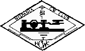

|  |
THE EUROPEAN CW ASSOCIATION
WORKED EUCW AWARD
|
 |
ALLGEMEINE REGELN:
1. Der EUCW-A kann von allen lizenzierte Amateuren erarbeitet werden.
Für Kurzwellenhörer gelten die hier formulierten Regeln entsprechend
sinngemäß.
2. Es zählen nur QSOs ab dem 27. April 1991, dem 200. Geburtstag von Samuel
Morse.
3. Antragsteller stellen eine Liste für durch QSL Karten bestätigte
Verbindungen (GCR-Liste) auf. Die Liste muss durch ein Mitglied eines
EUCW-Clubs bestätigt werden, Club und Mitgliedsnummer müssen aufgeführt sein.
4. Aufgelistet werden: Datum, Rufzeichen, Namen, QTH, EUCW Club.
5. Eine aktuelle Liste der EUCW-Klubs findet sich unter
http://www.agcw.de/eucw/eucw.html
Listen erscheinen auch in der AGCW-Info und werden auf aktuellem Stand
gehalten.
6. Es gibt getrennte Zertifikate für jede Diplomklasse.
7. Der Unkostenbeitrag beträgt 6 Euro.
8. Anträge an:
Werner 'Joe' Jochem, DK7VW
Wendelsborn 34
D-66606 St.Wendel
GERMANY
9. Der Bearbeiter entscheidet verantwortlich über die Diplomerteilung.
ANZAHL DER VERBINDUNGEN:
A. Bestätigte CW QSOs mit 100 EUCW-Klub-Mitgliedern auf mindestens drei
Bändern wobei für jedes Band mindestens 20 Verbindungen bestätigt sein
müssen.
B. Von mindestens sechs Mitgliedsklubs müssen mindestens drei Mitglieder
gearbeitet werden.
C. Bis zu 40 Verbindungen am 27-4-1991 zählen doppelt
KLASSEN
I. Standard: gesetzliche Leistungsbeschränkung
II. QRP: Antragsteller arbeitet höchstens mit 5 Watt HF
Ausgangsleistung.
III. SWL: keine Beschränkungen.
Das Diplom trägt das Motiv: Europakarte zur Zeit von Samuel Morse.
Back to ECM listing
Back to EUCW Start Page